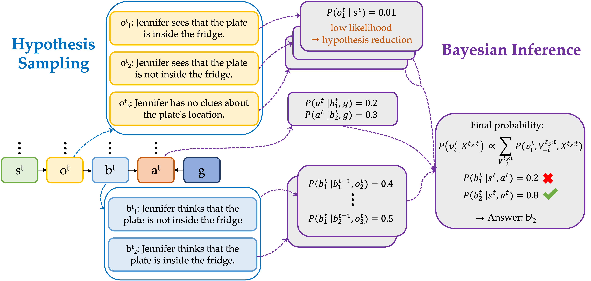

Automated Bayesian Inverse Planning and Model
Discovery for Open-ended Theory of Mind
Introducing AutoToM, a fully
automated and open-ended
Theory of Mind reasoning method. AutoToM is characterized by the following features:
Open-ended ToM: AutoToM is a model-based method that can operate in any domain, infer any mental variable, and conduct robust ToM reasoning of any order.
LLM Meets Bayesian inference: AutoToM integrates the flexibility of LLMs with the robustness of Bayesian inverse planning.
Automated Bayesian Inverse Planning: AutoToM conducts inverse planning for any specified model, automating the hypothesis sampling and Bayesian inference.
Automated Model Discovery: AutoToM performs automated model proposals and iteratively refines the model by adjusting variables and timesteps.
Performance: AutoToM outperforms existing methods in diverse domains, offering a scalable, robust, and interpretable approach to machine ToM.
Theory of Mind (ToM), the ability to understand people's minds based on their behavior, is key to developing socially intelligent agents.
We introduce AutoToM, a fully automated and open-ended Theory of Mind reasoning method.
It is the first model-based ToM method that addresses open-ended scenarios, offering a scalable, robust, and interpretable approach to machine ToM.
Theory of Mind (ToM), the ability to understand people's mental variables based on their behavior, is key to developing socially intelligent agents.
There are two current approaches to Theory of Mind reasoning:
Directly applying LLMs to reason about people's mental states with prompting strategies such as perspective-taking, change-tracking, and temporal-spatial reasoning. However, even with these advanced prompting techniques, LLMs still make systematic errors in complex scenarios.
Using model-based inference, particularly Bayesian Inverse Planning (BIP).
Recent works have proposed to combine BIP and LLMs to achieve scalable yet robust model-based ToM inference.
While these methods significantly outperform LLMs in specific domains, they use rigid, handcrafted models, which cannot generalize across different domains.
Bayesian Inverse Planning: A Robust Framework
Bayesian Inverse Planning (BIP) models how observers infer unobservable mental states—such as beliefs and goals—from an agent's behavior.
It assumes that the agent acts rationally according to a Bayesian Theory of Mind (BToM) model, which specifies how internal variables lead to observable actions.
BIP then inverts this generative process to assess what latent mental variables can lead to observed behavior, serving as a robust solution to ToM challenges.
To conduct BIP in different scenarios, there are several key challenges:
1) Different ToM inference problem requires different BToM models (see Figure 4), but we don't know which is most suitable;
2) There are many time steps in a given context, and we needs to reason which steps are relevant;
3) There is no predefined hypothesis space for each mental variable.
AutoToM: A Paradigm Shift
We introduce AutoToM, a fully automated and open-ended model-based Theory of Mind reasoning method.
It automates every aspect of Bayesian inverse planning, including the proposal and adjustment of model structures, the identification of relevant timesteps,
the generation of hypotheses, and the execution of Bayesian inference.
It is designed to operate in any context, infer any mental state, reason about any number of agents, and support any order of recursive reasoning,
which represents our vision of an open-ended and robust machine Theory of Mind.
Figure 1: An overview of AutoToM.
\( X^{t_s:t} \) are observable variables, \( V^{t_s:t} \) are latent mental variables, and \( q \) is the query.
\( t_s:t \) denotes timesteps from \( t_s \) to \( t \) in the context that are considered for inference.
Variables \( s^t, o^t, b^t, a^t, g^t \) represent state, observation, belief, action, and goal, respectively, with solid arrows indicating dependencies defined in the models.
Figure 1 provides an overview of AutoToM.
Given a question, we extract the observable variables (information extraction) and propose an initial BToM model.
This is followed by automated Bayesian inverse planning and iterative model adjustment.
When the model utility is high enough, we will produce the final answer based on the inference result.
Automated Bayesian Inverse Planning
Given a BToM model, we integrate LLMs as the computational backend to implement every aspect of the Bayesian inverse planning.
This includes hypothesis sampling for latent mental variables, and probabilistic inference for the target mental variable (Figure 2).
The construction, information flow, and computations within the BToM model are entirely automated.
Hypothesis Sampling.
Conventional BIP assumes a maually defined hypothesis space as well as hypothesis representation for each latent mental variable.
Our hypothesis sampling module instead leverages an LLM to propose only a small set of quality hypotheses for each latent variable,
conditioned on observable variables and their values extracted from the context.
We further apply hypothesis reduction to eliminate unlikely hypotheses and reduce the hypothesis space.
Bayesian Inference.
We estimate each local conditional in the BToM model using an LLM.
After marginalizing the joint distribution over non-target latent variables, we then produce the posterior probabilities of the target variable in the query.
We greatly generalize prior methods by enabling any ToM inference based on any BToM model structure, simultaneously considering multiple non-target latent variables
and supporting arbitrary levels of recursion for high-order ToM inference.

Figure 2: Illustration of automated Bayesian inverse planning given a specified BToM model.
Automated Model Discovery
Prior works on Bayesian inverse planning rely on manually designed BToM models, which limits their applicability to domain-specific scenarios. In contrast, the Automated Model Discovery component automatically proposes a model and dynamically adjusts it to ensure both the effectiveness of the model—confidently inferring agents' mental states—and the efficiency of the inference by minimizing model complexity.
Information Extraction.
The information extraction module processes the given context to identify the values of observable variables,
including states, actions, and utterances, organized along a timeline.
When there are multiple agents, we first identify whose mental state the question is asking about,
and then construct the timesteps based on its actions.
Initial Model Proposal.
We employ an LLM to propose an initial BToM model tailored to the available information and the query.
Following this model, we conduct §automated Bayesian inverse planning.
If the model utility exceeds a threshold, we accept the inference result as the final answer.
Otherwise, we use the model utility to guide model adjustments.
Model Adjustment.
We iteratively adjust the proposed model by considering two types of model adjustments: variable adjustment and timestep adjustment (Figure 3).
Variable Adjustment.
We refine the model structure at a specific timestep by iteratively introducing new, relevant latent variables into the model to address uncertainty in the inference.
For each adjustment, we compute the updated model utility and accept the modification that offers the biggest increase in utility.
Timestep Adjustment.
If the model utility remains low and no significant improvements can be achieved through variable adjustment given the current timesteps \( t_s:t \),
we may need to incorporate an additional timestep, \( t_s-1 \), to provide more context for the inference.
When we add one more timestep, we first apply the model structure in the initial model proposal, and then conduct variable adjustments for this new timestep as well.
Figure 3: We automatically refine the BToM model by alternating between variable adjustment and timestep adjustment.
Effective and Efficient.
The results from our ablation study (Figure 4) highlight the benefits of variable adjustment, timestep adjustment, and hypothesis reduction.
The automatic model discovery in AutoToM can construct suitable BToM model that not only enables rich ToM inferences but also reduces compute, balancing accuracy and cost.
Figure 4: Averaged performance and compute of AutoToM and the ablated methods on all benchmarks.
State-of-the-art Performance
We evaluated our method on multiple Theory of Mind benchmarks, including ToMi, BigToM,
MMToM-QA, MuMA-ToM, and Hi-ToM.
As shown in Figure 5, these benchmarks encompass different mental variables, observable contexts, numbers of agents, the presence or absence of utterances, wording styles, and modalities.
AutoToM autonomously discover the appropriate BToM models for them.
Figure 5: Examples questions and the necessary BToM model in diverse benchmarks.
The main results are summarized in Table 1.
Unlike our AutoToM method, many recent ToM baselines can only be applied to specific benchmarks. Among general methods, AutoToM achieved the best result on average.
In particular, it outperformed all baselines by a large margin on more challenging benchmarks such as BigToM (backward), MMToM-QA, and MuMA-ToM.
This is because Bayesian inverse planning is more robust in inferring mental states given long context with complex environments and agent behavior.
It is also more adept at recursive reasoning which is key to higher-order inference.
Notably, AutoToM achieved similar performance to the configuration using manually specified models (AutoToM w/ Model Spec.),
indicating that automatic model discovery without domain knowledge is as effective as human-provided models.
Method
Type
ToMi
BigToMf
BigToMb
MMToM-QA
MuMA-ToM
Hi-ToM
All
SymbolicToM
Specific
98.50
-
-
-
-
-
-
TimeToM
Specific
97.00
96.00
-
-
-
-
-
BIP-ALM
Specific
-
-
-
76.70
33.90
-
-
LIMP
Specific
-
-
-
-
76.60
-
-
AutoToM w/ Model Spec.
Specific
86.88
93.00
74.25
79.83
84.00
74.00
81.99
LLaMA 3.1 70B
General
65.00
87.63
65.00
43.83
55.78
50.00
61.21
Gemini 1.5 Flash
General
56.13
79.00
68.25
33.50
52.56
52.00
56.91
GPT-4o
General
70.13
92.25
62.75
44.00
63.55
56.00
64.78
SimToM
General
74.88
91.25
51.50
52.50
47.60
71.00
64.79
AutoToM
General
86.25
92.50
75.75
75.50
81.44
72.50
80.66
Table 1: Results of AutoToM and baselines on all benchmarks.
“-” indicates that the domain-specific method is not applicable to the benchmark.
Conclusion
To conclude, AutoToM is a novel framework for open-ended Theory of Mind.
Given any ToM inference problem, AutoToM can automatically construct a suitable BToM model and conduct automated Bayesian inverse planning with an LLM backend.
It suggests a promising direction toward cognitively grounded ToM modeling that is scalable, robust, and open-ended.
Acknowledgement
We would like to thank the Cambrian authors for providing this webpage template.